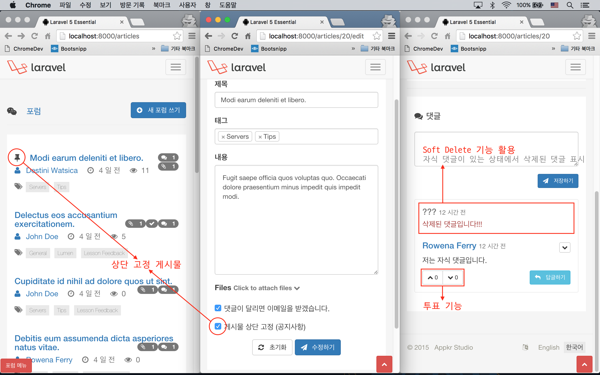
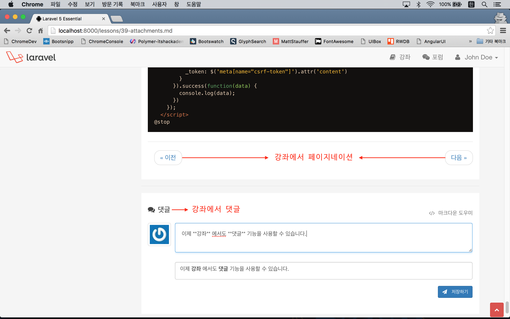
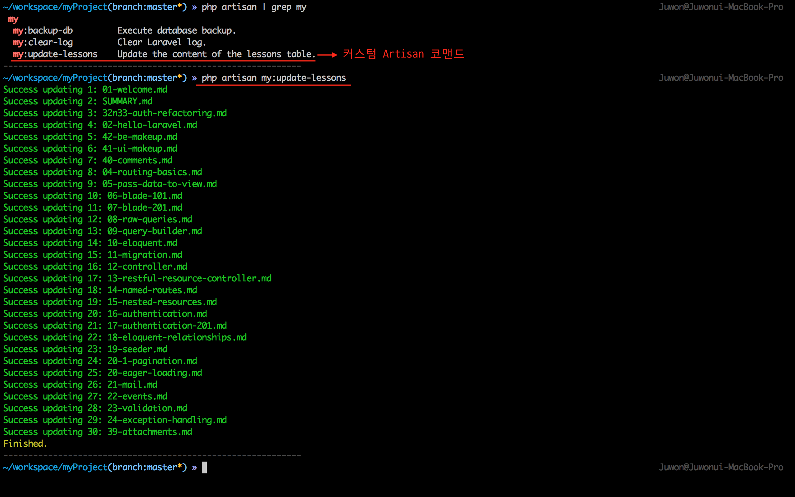
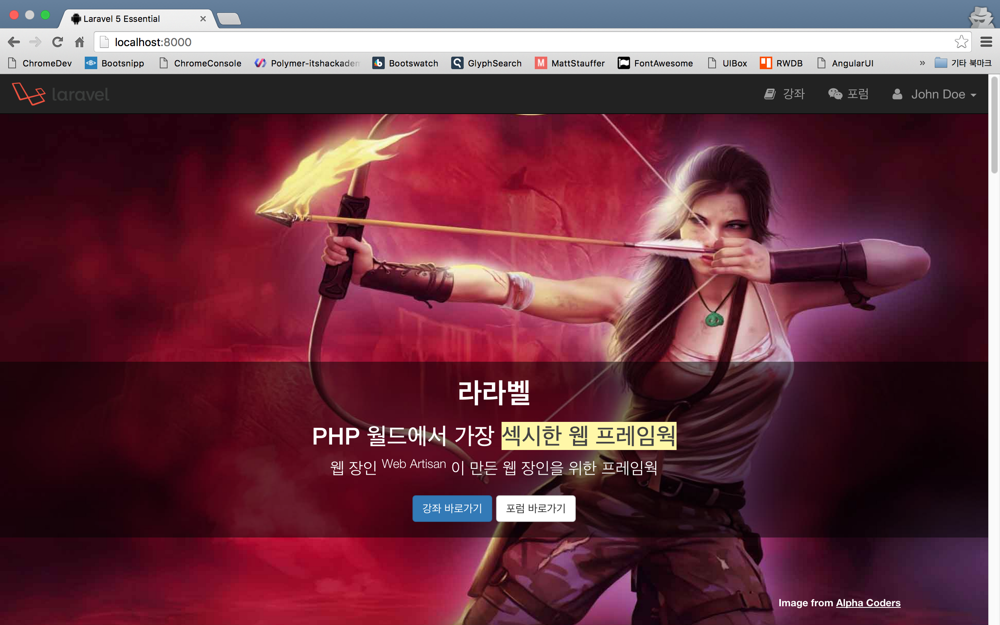
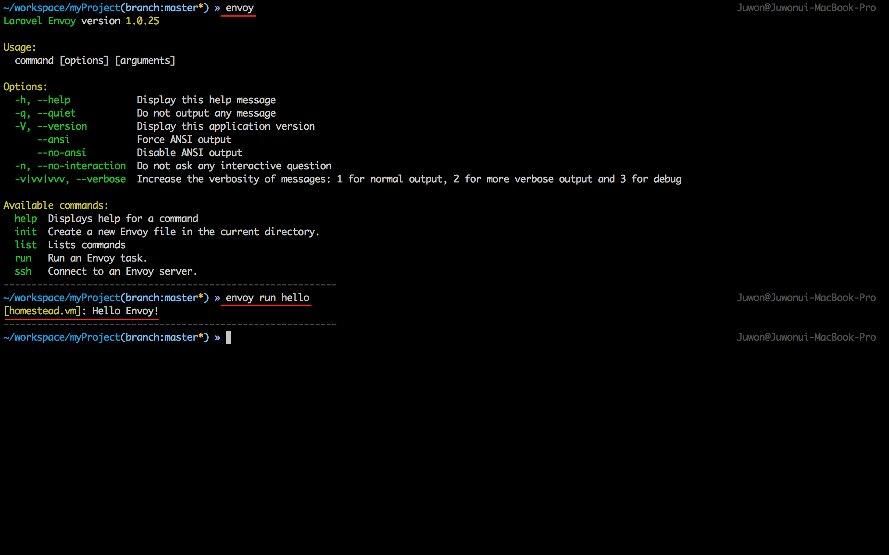
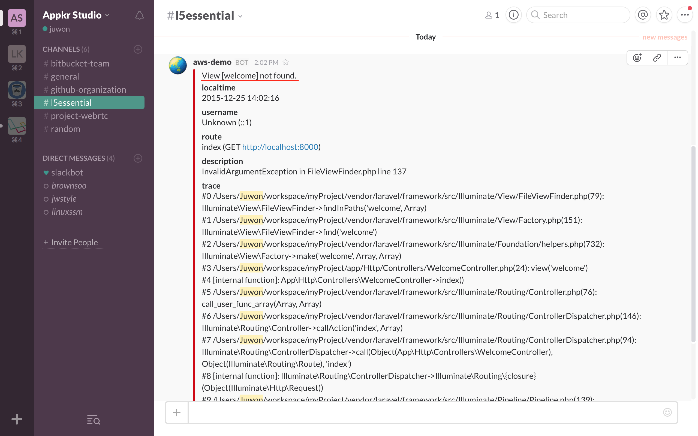

실전 프로젝트 2 - Forum
43강 - 변경 사항 알림
2~3주 정도 다른 일로 쉬는 동안 강좌는 쓰지 못했지만, 코드 변경을 계속 해 왔다. 다음 실전 강좌로 넘어가기 전에, 모든 변경 내용을 설명하지는 못하겠지만, 큰 변경 내용은 정리해서 공유하고자 한다.
- Article Refactoring
- 포럼에서 "상단 고정 게시물" 기능을 구현했다.
Article,Comment모델에 Soft Delete 기능을 추가하였다.- 댓글에 투표 기능을 추가했다.
- Lesson Refactoring
- 'documents (문서)' 디렉토리, Route 엔드포인트, 뷰 등등을 'lessons (강좌)' 으로 변경했다. 아울러 모델 이름도
Document에서Lesson으로 변경했다. - 포럼 뿐 아니라 강좌에서도 댓글을 쓸 수 있도록 수정하였다. 이 과정에서
Lesson모델 관련 Repository Pattern 을 적용하는 등 몇 가지 관련 코드들의 수정이 있었다. - 강좌에서도 "이전", "다음" 페이지네이션 기능을 추가하였다.
- 'lessons (강좌)' 디렉토리에 담긴 마크다운 파일의 내용이 바뀌었을 경우,
Lesson모델과 컨텐츠 동기화를 해 주는 커스텀 Artisan 코맨드를 추가했다.
- 'documents (문서)' 디렉토리, Route 엔드포인트, 뷰 등등을 'lessons (강좌)' 으로 변경했다. 아울러 모델 이름도
- 라이브 데모 사이트 개설
- 이 강좌의 라이브 데모 사이트를 위해, 랜딩 페이지를 만들고, Amazon Web Service 에 코드를 배포하였다.
- 이 과정에서 Envoy SSH Task Runner 를 사용하였다.
- 라이브 데모 사이트에서 발생하는 Exception 을 # slack 메시지로 받기 위한 기능을 추가했다.
참고 상세한 변경사항은 Laravel 5 Essential 의 Commit History 에서 확인하시기 바란다.
1. Article Refactoring
상단 고정 게시물 기능 구현
Article 모델에 $pin 속성이 지정되어 있으면, 포럼 목록을 표시할 때 가장 위에 표시하는 식으로 포럼 "상단 고정 게시물" 기능을 구현했다.
// DATE_create_articles_table.php
class CreateArticlesTable extends Migration
{
public function up()
{
Schema::create('articles', function (Blueprint $table) {
// ...
$table->boolean('pin')->default(0);
}
}
}아래 코드에서 orderBy('pin', 'desc')가 추가된 것을 확인하자.
// app/Http/Controllers/ArticlesController.php
class ArticlesController extends Controller
{
protected function filter($request, $query)
{
//...
return $query->orderBy('pin', 'desc')->orderBy($sort, $direction);
}그리고, $pin 속성은 관리자만 지정하거나 해제할 수 있도록 하였다.
<!-- resources/views/articles/partial/form.blade.php -->
<!-- Other view codes... -->
@if ($currentUser and $currentUser->isAdmin())
<div class="form-group">
<div class="checkbox">
<label>
<input type="checkbox" name="pin" {{ $article->pin ? 'checked="checked"': ''}}>
{{ trans('forum.pin') }}
</label>
</div>
</div>
@endifSoft Delete 적용 및 댓글에 응용
Soft Delete 란 사용자가 삭제 요청을 하면, DB 에서 레코드를 완전히 삭제하는 것이 아니라, deleted_at 이란 필드에 삭제된 날짜를 넣어 놓는 식으로 동작한다. 마이그레이션에서 deleted_at 필드를 추가하고, Soft Delete 를 적용할 모델에서 라라벨에 제공하는 Trait 만 추가하면 된다.
// DATE_create_articles_table.php
class CreateArticlesTable extends Migration
{
public function up()
{
Schema::create('articles', function (Blueprint $table) {
// ...
$table->softDeletes();
}
}
}아래에서 $dates 는 날짜 형식을 Carbon\Carbon 인스턴스로 바꾸어서 보여주기 위한 Accessor 이다. 기본기 22강 - 이벤트 강좌에서 $last_login 속성을 추가할 때도 사용한 적이 있다.
// app/Article.php
use Illuminate\Database\Eloquent\SoftDeletes;
class Article extends Model
{
use SoftDeletes;
protected $dates = ['deleted_at'];
// ...
}Soft Delete 가 적용되었더라도 엘로퀀트나 쿼리빌더에서는 이전과 동일하게 쿼리하면, 라라벨이 내부적으로 deleted_at == null 인 레코드들만 가져오게 되어 있다. 다만 삭제된 레코드까지도 가져오고 싶다면 withTrashed() 메소드를 체인하면 된다. 아래는 자식 댓글이 있음에도 불구하고, 작성자가 자신의 댓글을 삭제했을 때, "삭제된 댓글" 이라고 표시하기 위한 구현인데, withTrashed() 로 삭제된 댓글까지도 모두 가져오고 있음을 확인할 수 있다.
// app/Http/Controllers/ArticlesController.php
class ArticlesController extends Controller
{
public function show($id)
{
$article = Article::with('comments', 'tags', 'attachments', 'solution')->findOrFail($id);
$commentsCollection = $article->comments()->with('replies')
->withTrashed()->whereNull('parent_id')->latest()->get();
// ...
}아래는 Comment 모델의 삭제 구현이다. 자식 댓글이 없으면 forceDelete() 메소드로 DB 에서 완전히 삭제해 버리고, 그렇지 않으면 delete() 메소드로 Soft Delete 한다.
// app/Http/Controllers/CommentsController.php
class CommentsController extends Controller
{
public function destroy(Request $request, $id)
{
$comment = Comment::with('replies')->find($id);
if ($comment->replies->count() > 0) {
$comment->delete();
} else {
$comment->forceDelete();
}
// ...
}
}이제 뷰를 살펴보자. $comment->trashed() 는 Soft Delete 된 댓글일 경우 true 를 반환한다.
<!-- resources/views/comments/index.blade.php -->
@forelse($comments as $comment)
@include('comments.partial.comment', [
// ...
'hasChild' => count($comment->replies),
'isTrashed' => $comment->trashed()
])
@empty
@endforelse<!-- resources/views/comments/partial/comment.blade.php -->
@if ($isTrashed and ! $hasChild)
<!-- 자식 댓글이 없는 상태에서 삭제된 댓글 -->
@elseif ($isTrashed and $hasChild)
<!-- 자식 댓글이 있는데 삭제되었을 때 -->
<p class="text-danger">삭제된 댓글입니다.</p>
@else
<!-- 삭제되지 않은 댓글일 때 -->
@endif댓글에 투표 기능 추가
Disqus, Stack Overflow 의 댓글들은 투표시스템 (== 포인팅 시스템) 을 가지고 있고, 그 점수에 따라 댓글의 품질을 평가하고 있다. 여기서도 유사한 기능을 구현했다. 주의할 점은 특정 댓글에 이미 Up 또는 Down 투표를 한 사용자는 같은 댓글에 대해서는 다시 투표를 할 수 없어야 한다는 점이다.
먼저 투표을 받기 위한 마이그레이션과 모델을 만들자. user_id 필드는 이미 투표한 사용자인지를 판단하기 위해서 사용한다. up, down 필드는 특정 comment_id 에 대한 투표 값 통계를 내기 위한 목적으로 각각 분리해서 필드를 생성했다.
// DATE_create_votes_table.php
class CreateVotesTable extends Migration
{
public function up()
{
Schema::create('votes', function (Blueprint $table) {
$table->increments('id');
$table->integer('user_id')->unsigned();
$table->integer('comment_id')->unsigned();
$table->tinyInteger('up')->nullable();
$table->tinyInteger('down')->nullable();
$table->timestamp('voted_at');
$table->foreign('user_id')->references('id')->on('users')->onDelete('cascade');
$table->foreign('comment_id')->references('id')->on('comments')->onDelete('cascade');
});
}
}아래는 Vote 모델이다. User, Comment 모델에서의 Reverse Relationship 은 설명을 생략한다.
// app/Vote.php
class Vote extends Model
{
public $timestamps = false;
protected $fillable = [
'user_id',
'comment_id',
'up',
'down',
'voted_at',
];
protected $dates = [
'voted_at',
];
public function comment()
{
return $this->belongsTo(Comment::class);
}
public function user()
{
return $this->belongsTo(User::class);
}
}이제 투표를 하기 위한 UI 를 만들자. 아래 코드에서 <?php $voted = $comment->votes->contains('user_id', $currentUser->id); ?> 부분을 주목해볼만 하다. 페이지가 로드될 때, 현재 로그인한 사용자가 이미 투표를 했는지 확인하는 부분인데, \Illuminate\Database\Eloquent\Collection::contains(mixed $key, mixed $value = null) API 를 이용하고 있다. 이미 투표했을 경우. @if ($voted) {{ 'disabled="disabled"' }} @endif 에서 버튼을 비활성화시켰다.
투표 값, 'up' 또는 'down' 전송은 Ajax 를 이용하고 있고, 서버에서 성공 응답을 받으면, 투표한 댓글의 투표 버튼을 비활성화 시키고 있다.
<!-- resources/views/comments/partial/comment.blade.php -->
@if ($currentUser)
<div class="btn-group" role="group">
<?php $voted = $comment->votes->contains('user_id', $currentUser->id); ?>
<button type="button" class="btn btn-default btn-sm btn__vote" data-vote="up" title="Vote up" @if ($voted) {{ 'disabled="disabled"' }} @endif>
{!! icon('up', false) !!} <span>{{ $comment->up_count }}</span>
</button>
<button type="button" class="btn btn-default btn-sm btn__vote" data-vote="down" title="Vote down" @if ($voted) {{ 'disabled="disabled"' }} @endif>
{!! icon('down', false) !!} <span>{{ $comment->down_count }}</span>
</button>
</div>
<!-- Other view codes... -->
@endif
@section('script')
<script>
$("button.btn__vote").on("click", function(e) {
var self = $(this),
commentId = $(this).closest(".media__item").data("id");
$.ajax({
type: "POST",
url: "/comments/" + commentId + "/vote",
data: {
vote: self.data("vote")
}
}).success(function(data) {
self.find("span").html(data.value);
self.attr("disabled", "disabled");
self.siblings().attr("disabled", "disabled");
}).error(function() {
flash("danger", "{{ trans('common.msg_whoops') }}", 2500);
});
});
</script>
@stop이제 뷰에서 Ajax 로 전송한 투표를 받고 처리할 수 있는 Route 와 컨트롤러 로직을 만들어야 한다.
// app/Http/routes.php
Route::post('comments/{id}/vote', 'CommentsController@vote');아래는 컨트롤러이다. 주석에 설명을 달았다.
// app/Http/Controllers/CommentsController.php
class CommentsController extends Controller
{
public function vote(Request $request, $id)
{
$this->validate($request, [
'vote' => 'required|in:up,down',
]);
if(Vote::whereCommentId($id)->whereUserId($request->user()->id)->exists()) {
// 사용자가 브라우저의 Inspector 등을 이용해서 disabled 된 투표 버튼을 다시 활성화시켜
// 중복 투표를 하는 것을 방지하기 위한 조치이다.
return response()->json(['errors' => 'Already voted!'], 409);
}
$comment = Comment::findOrFail($id);
$up = $request->input('vote') == 'up' ? true : false;
$comment->votes()->create([
'user_id' => $request->user()->id,
'up' => $up ? 1 : null,
'down' => $up ? null : 1,
'voted_at' => \Carbon\Carbon::now()->toDateTimeString(),
]);
return response()->json([
// up, down 어떤 투표인지와 투표 후 총 투표 수를 반환하고,
// 뷰의 자바스크립트에서 총 투표 수를 업데이트한다.
'voted' => $request->input('vote'),
'value' => $comment->votes()->sum($request->input('vote'))
]);
}
}아래 Comment 모델에서 $with 속성은 모든 쿼리에서 포함할 Eager Loading 관계이다. 즉, Comment::find(1) 로만 쿼리해도 Comment::with('author', 'votes')->find(1) 과 같은 결과를 보여준다는 의미이다.
// app/Comment.php
class Comment extends Model
{
protected $with = [ 'author', 'votes', ];
protected $appends = [ 'up_count', 'down_count' ];
public function getUpCountAttribute()
{
return (int) static::votes()->sum('up');
}
public function getDownCountAttribute()
{
return (int) static::votes()->sum('down');
}
// ...
}투표를 포함한 댓글 목록을 브라우저 쪽으로 던져 주는 부분은 ArticlesController::show() 메소드인데 설명은 생략한다. 대신, 사용자로 부터 얻은 댓글에 대한 통계를 어떻게 얻는지를 설명하기로 한다.
Comment 모델에서 up_count 와 down_count 란 필드를 동적으로 생성하고 모델의 속성으로 Append 하였다. 이 속성들은 getUpCountAttribute(), getDownCountAttribute() 란 메소드에서 그 값이 채워지는데, Comment::votes()->sum(up) 처럼 엘로퀀트 컬렉션에서 제공하는 통계 메소드인 sum() 을 이용하고 있다. 앞 전에 Vote 모델을 채울 때, up 과 down 속성에 null|1 을 채운 것이 여기서 모두 합해 지는 것이다.
$ php artisan tinker
>>> $comment = App\Comment::find(22);
=> App\Comment {#835
content: "저는 자식 댓글입니다.",
#...,
author: App\User {#840
name: "Rowena Ferry",
#...,
},
votes: Illuminate\Database\Eloquent\Collection {#838
all: [
App\Vote {#843
up: 1,
#...,
},
App\Vote {#844
up: 1,
#...,
},
],
},
}
>>> $comment->up_count;
=> 2
>>> $comment->down_count;
=> 0
2. Lesson Refactoring
Repository 구현
강좌에서도 댓글을 쓸 수 있도록 하기 위해서, 28강 - Cache 에서 살펴본 바와 유사하게, 사용자의 마크다운 파일 요청이 있으면, 파일시스템에 있던 파일을 읽어서 바로 주는 것이 아니라 DB 에 넣었다. 즉, 파일의 내용을 DB 에 넣어서, 모델을 만들었다는 얘기다. 단, 매번 파일시스템 -> DB Insert 식으로 동작하는 것이 아니라, 캐시처럼 DB 를 먼저 탐색해서 없으면 파일시스템에서 읽어서 DB Insert 하는 식으로 구현했다.
먼저 파일로 부터 읽어 들인 마크다운 파일의 내용을 담을 DB 마이그레이션을 만들어야 한다.
// DATE_create_lessons_table.php
class CreateLessonsTable extends Migration
{
public function up()
{
Schema::create('lessons', function (Blueprint $table) {
$table->increments('id');
$table->integer('author_id')->unsigned();
$table->string('name');
$table->text('content');
$table->timestamps();
$table->foreign('author_id')->references('id')->on('users');
});
}
}여러가지 구조를 고민하다가, 강좌 외에도 마크다운 형식의 파일을 서비스할 일이 더 있을 것을 고려해서 Repository 를 만들기로 했다. 아래 코드에서 find() 메소드를 보면, 사용자가 요청한 파일 이름으로 먼저 DB 쿼리를 하고, 쿼리 결과가 null 이면 파일 시스템에서 읽어서 Lesson 모델을 생성하고 있는 것을 확인할 수 있다.
// app/Repositories/MarkdownRepository.php
use Exception;
use File;
use Illuminate\Database\Eloquent\Model;
abstract class MarkdownRepository implements RepositoryInterface
{
protected $model;
protected $path;
public function __construct()
{
$this->initialize();
}
public abstract function model();
protected function initialize()
{
$model = app()->make($this->model());
if (! $model instanceof Model) {
throw new Exception(
'model() method must return a string name of an Eloquent Model.'
);
}
if (! property_exists($this->model(), 'path')) {
throw new Exception(
"{$this->model()} should have a property named 'path'"
);
}
$path = base_path($model::$path);
if (! File::isDirectory($path)) {
throw new Exception(
"Something went wrong with the path property of {$this->model()} model."
);
}
$this->model = $model;
$this->path = $path;
}
public function find($id, $columns = ['*'])
{
return $this->model->whereName($id)->first()
?: $this->model->create([
// Bad!! Avoid hard code, b.c, admin may change.
'author_id' => 1,
'name' => $id,
'content' => File::get($this->getPath($id)),
]);
}
public function image($file) { // ... }
public function etag($file) { // ... }
protected function getPath($file)
{
$path = $this->path . DIRECTORY_SEPARATOR . $file;
if (!File::exists($path)) {
abort(404, 'File not exist');
}
return $path;
}
}이 추상 클래스를 상속하는 클래스는 public abstract function 으로 지정한 model() 메소드를 반드시 구현해야 한다. 그리고, 해당 Repository 와 연결된 모델에서는 $path 속성을 제공해야 한다. 이 클래스를 상속하게 되는 LessonRepository 와 Lesson 모델을 차례로 볼 것이다.
// app/Repositories/LessonRepository.php
class LessonRepository extends MarkdownRepository
{
public function model()
{
return \App\Lesson::class;
}
}// app/Lesson.php
class Lesson extends Model
{
public static $path = 'lessons';
// ...
}MarkdownRepository 추상 클래스에서 initialize() 메소드의 구동을 살펴보자.
- 먼저
app()->make(string $abstract)Helper 를 이용해서,Lesson모델을 생성한다.LessonRepository::model()메소드에서\App\Lesson이란 스트링을 반환하게 되어 있으므로, 당연히 전술한 코드는app()->make('\App\Lesson')와 같이 된다. - 좀 전에 만든 클래스가 엘로퀀트 모델이 맞는지를 체크하여 아닐 경우
\Exception을 던진다 property_exists(mixed $class, string $property)PHP 내장 함수로,Lesson모델에$path속성이 지정되어 있지 않을 경우,\Exception을 던진다.- 또,
Lesson모델에서$path속성으로 지정한 디렉토리가 존재하지 않을 경우\Exception을 던진다. - 모든 체크 과정이 완료되면, 이 추상 클래스가 동작하기 위해 필요한
$model,$path속성이 모두 준비된다.
이제 LessonsController 에서 만들어진 LessonRepository 를 사용하면 된다.
// app/Controllers/LessonsController
class LessonsController extends Controller
{
protected $repo;
public function __construct(LessonRepository $repo)
{
// LessonRepository 를 Injection 하고 $repo 속성에 할당한다.
$this->repo = $repo;
}
public function show($file = '01-welcome.md')
{
$lesson = $this->repo->find($file);
$commentsCollection = $lesson->comments()->with('replies')
->withTrashed()->whereNull('parent_id')->latest()->get();
return view('lessons.show', [
'index' => $this->repo->index(),
'lesson' => $lesson,
'comments' => $commentsCollection,
'commentableType' => $this->repo->model(),
'commentableId' => $lesson->id,
]);
}
// ...
}강좌에서도 댓글을 사용하기 위해 $comments 변수를 뷰로 넘기는 것이 보일 것이다.
Pagination
포럼 목록보기에서 \Illuminate\Database\Eloquent\Collection 을 이용해서 페이지네이션을 보여주었다면, 강좌에서는 단일 강좌 상세보기를 보여주고 있으므로 "다음" 또는 "이전" 강좌로 이동하는 페이지네이션이 적절할 것으로 생각된다.
MarkdownRepository 에 페이지네이션에 필요한 기능을 구현하였다. $toc 는 전체 강좌 목록을 가진 배열이다. $current 는 현재 선택된 강좌의 배열 값 (== 파일이름) 이다. $toc 는 initialize() 과정에서 셋팅이되며, $current 는 find() 메소드에서 셋팅이 된다.
$toc 를 셋팅하는 과정에 glob(), array_diff(), array_map(), pathinfo() 등의 PHP 내장 함수를 사용하는데, 공식 문서들을 참고하자.
prev(string $current), next(string $current) 메소드는 모두 $current 를 인자로 받는데, 이는 현재 화면에 표시된 강좌의 마크다운 파일이름이다. 이 메소드들에서는 array_search() PHP 내장 함수를 이용해서, 인자로 넘겨 받은 $current 에 해당하는 배열 인덱스를 $toc 에서 찾은 후, +1 또는 -1 해서 원하는 인덱스에 해당하는 파일이름을 반환하게 구현되어 있다. array_key_exists() 도 찾아보기 바란다.
// app/Repositories/MarkdownRepository.php
abstract class MarkdownRepository implements RepositoryInterface
{
protected $toc;
protected $current;
public function __construct() {// ...}
protected function initialize()
{
if (! $this->toc) {
$all = glob(base_path($model::$path . DIRECTORY_SEPARATOR . '*.md'));
$except = glob(base_path($model::$path . DIRECTORY_SEPARATOR . '*INDEX.md'));
// $files 는 INDEX.md 를 제외한 나머지 *.md 파일들을 담고 있는 배열이다.
$files = array_diff($all, $except);
$this->toc = array_map(function($file) {
// $files 배열을 순회하면서, $this->toc 에 담는다.
return pathinfo($file, PATHINFO_BASENAME);
}, $files);
}
}
public function find($id, $columns = ['*'])
{
// $id 는 '01-welcome.md' 와 같은 파일 이름을 담고 있다.
$this->current = $id;
// ...
}
public function prev($current) {
// $current 가 '01-welcome.md' 라면,
// array_search 의 결과는 이 파일의 index 인 0 이 된다.
// $prev 에는 -1 이 할당된다.
$prev = array_search($current, $this->toc) - 1;
// $this->toc[-1] 은 존재하지 않으므로 false 가 리턴될 것이다.
return array_key_exists($prev, $this->toc) ? $this->toc[$prev] : false;
}
public function next($current) {
// $current 가 '01-welcome.md' 라면,
// array_search 의 결과는 이 파일의 index 인 0 이 된다.
// $next 에는 2 가 할당된다.
$next = array_search($current, $this->toc) + 1;
// $this->toc[2] 에 해당하는 값은 '02-hello-laravel.md' 이다.
return array_key_exists($next, $this->toc) ? $this->toc[$next] : false;
}
// ...
}
이제 쉽다. 컨트롤러에서 뷰에다 "이전", "다음" 에 해당하는 파일이름을 넘겨주기만 하면 되니까..
// app/Http/Controllers/LessonsController.php
class LessonsController extends Controller
{
public function show($file = '01-welcome.md')
{
// ...
return view('lessons.show', [
// ...
'prev' => $this->repo->prev($file),
'next' => $this->repo->next($file),
]);
}
}뷰를 보자.
// resources/views/lessons/show.blade.php
<article>
@include('lessons.partial.pager')
<!-- ... -->
</article>컨트롤러에서 넘겨 받은 $prev, $next 값이 false 일 경우, 즉 처음 페이지 또는 마지막 페이지일 경우, class="disabled" 속성을 지정하고 있다. 반면 값이 있을 경우에는, route('lessons.show', '파일이름') 으로 "이전" 또는 "다음" 으로 이동하는 링크를 만드는 것을 볼 수 있다.
// resources/views/lessons/partial/pager.blade.php
<nav>
<ul class="pager">
<li class="previous {{ $prev === false ? 'disabled' : ''}}">
<a href="{{ $prev !== false ? route('lessons.show', $prev) : '#'}}">
{{ trans('pagination.previous') }}
</a>
</li>
<li class="next {{ $next === false ? 'disabled' : ''}}">
<a href="{{ $next !== false ? route('lessons.show', $next) : '#' }}">
{{ trans('pagination.next') }}
</a>
</li>
</ul>
</nav>기존 강좌에서 넣어 두었던 마크다운을 이용한 이전 강좌, 다음 강좌 링크와 이번에 구현한 페이지네이션간의 중복을 피하기 위해, 기존 강좌의 마크다운 파일에 <!--@start--> <!--@end--> 와 같은 커스텀 마크다운 컴파일 규칙을 정의하고, 그것을 이해하고 처리하기 위해 'app/Services/Markdown.php' 도 약간 수정했다.

Custom Artisan Command
사용자의 요청이 없으면 강좌의 내용은 DB 에 Insert 되지 않는다. 그렇지만, 이미 DB 에 들어간 강좌의 마크다운 파일을, 다음 릴리즈 때 수정해서 올려야 한다면 어떻게 할까? 당연히 기존에 DB 에 들어가 있는 강좌 엔트리를 모두 업데이트해 줘야 한다. 사실 'lessons' 테이블을 truncate 하면 모든게 리셋되고, 새로 파일에서 읽어 DB Insert 를 하겠지만, 이렇게 하면 문제가 생긴다. 무슨 문제이고 하니, 댓글의 'commentable_id' 값이 이미 DB 에 들어간 강좌의 'id' 와 연결되어 있다는 점이다. 강좌의 변경 내용을 효율적으로 반영하기 위해 커스텀 Artisan 코맨드 를 만들자.
$ php artisan make:console UpdateLessonsTable기본적으로 알고 있어야 할 것은 이 정도다. $this->argument() 로 콘솔에서 사용자가 입력한 인자를 얻을 수 있다. $this->option() 으로 콘솔에서 사용자가 입력한 옵션 값을 얻을 수 있다. $this->info(), $this->error(), $this->warning(), $this->line(), $this->table() 등으로 사용자에게 코맨드 실행결과를 알려 줄 수 있다. 사실 가장 중요한 것은 코맨드의 인자와 옵션을 지정하는 $signature 속성이다. 더 상세한 내용은 공식문서를 살펴볼 것을 권장한다.
// app/Console/Commands/UpdateLessonsTable.php
class UpdateLessonsTable extends Command
{
protected $signature = 'my:update-lessons';
protected $description = 'Update the content of the lessons table.';
public function handle()
{
$lessons = \App\Lesson::all();
foreach($lessons as $lesson) {
$path = base_path(\App\Lesson::$path . DIRECTORY_SEPARATOR . $lesson->name);
$lesson->content = \File::get($path);
$lesson->save();
$lesson->touch();
$this->info(sprintf('Success updating %d: %s', $lesson->id, $lesson->name));
}
return $this->warn('Finished.');
}
}Artisan 명령을 작성했으면 반드시 'app/Console/Kernel.php' 에 등록해 주어야 한다.
// app/Console/Kernel.php
class Kernel extends ConsoleKernel
{
protected $commands = [
\App\Console\Commands\UpdateLessonsTable::class,
];
// ...
}실행해 보면 아래 그림과 같은 결과를 얻을 수 있다.

참고 라라벨은 서버의 Crontab 정의를 직접 손대지 않고도, PHP 코드 레벨에서 작업 스케쥴을 정의할 수 있게 도와 준다. 공식 문서의 Task Scheduling 부분을 살펴볼 것을 권장한다. 아래는 이 서비스에 적용되어 있는 월 단위 라라벨 로그를 삭제하는 스케쥴이다. 매일 3시에 DB 를 백업하는 코맨드도 넣어 두었다.
// app/Console/Commands/ClearLog.php
class ClearLog extends Command
{
protected $signature = 'my:clear-log';
protected $description = 'Clear Laravel log.';
public function handle()
{
$path = storage_path('logs/laravel.log');
system('cat /dev/null > ' . $path);
$now = \Carbon\Carbon::now()->toDateTimeString();
$result = "{$this->getName()} command done at {$now}";
\Log::info($result);
return $this->info($result);
}
}// app/Console/Kernel.php
class Kernel extends ConsoleKernel
{
// ...
protected function schedule(Schedule $schedule)
{
$schedule->command('inspire')->hourly();
$schedule->command('my:clear-log')->monthly();
$schedule->command(
sprintf('my:backup-db %s %s', env('DB_USERNAME'), env('DB_PASSWORD'))
)->dailyAt('03:00');
}
}3. 라이브 데모 사이트 개설
라이브 데모 사이트
AWS 에 오픈했다.

Envoy SSH Task Runner
Envoy 는 라라벨에서 제공하는 Remote Task Runner 이다. 원격 서버에 SSH 로 직접 로그인하지 않고도, 스크립트로 써 놓은 Task 를 "로컬" 에서 실행할 수 있는 기능이다. Envoy 는 Puppet, Chef 와 같은 프로비저닝 툴도 아니고, Capistrano, Deployer 와 같은 배포 툴과도 결이 다르다. 앞서 나열한 목적이 명확한 고차원적인 애들 보다는 훨신 더 저수준 (== Low Level) 이고, 그만큼 자유도가 높다는 뜻이다. 이야기인 즉, 프로비저닝 용도로도 쓸 수 있고, 배포 용도로도 쓸 수 있고, 일반적인 관리 작업 용도로도 쓸 수 있다는 말이다. 파이썬으로 만들어진 fabric/fabric 과 가장 유사하다고 할 수 있다.
Envoy 를 사용하기 위해 가장 먼저 해야 하는 일은 Envoy 를 설치하는 일이다.
$ composer global require "laravel/envoy=~1.0"# 사용하는 Shell 에 따라 Profile 파일 이름은 다를 수 있다.
# 필자는 Zshell 을 쓰므로, .zshrc 이다. e.g. .profile, .bashrc
$ nano ~/.zshrc
# composer global 로 설치한 패키지들의 실행파일을 경로에 넣어 준다.
# 이 과정이 없다면 $ ~/.composer/vendor/bin/envoy 와 같이 전체 경로를 써주어야 한다.
export PATH="$PATH:$HOME/.composer/vendor/bin"
# 수정했다면 ctrl + X, "Y" 를 눌러 변경 내용을 저장하고, 엔터를 한번 더 눌러 기존 파일을 덮어 쓴다.
# 그리고, 수정 내용을 현재 콘솔에 적용해 준다. 콘솔을 껐다가 다시 실행해도 된다.
$ source ~/.zshrc로컬에 설치된 Ubuntu VM을 원격 서버라 가정하고, 여기에 접속해서 터미널에서 'hello' 를 찍는 간단한 스크립트만 짜 볼 것이다. 독자들께서는 사용하시는 원격 서버의 정보를 직접 입력하여 테스트해 보시기 바란다. 여기서 재밌는 부분은 블레이드와 유사한 문법을 이용할 수 있다는 점이다.
// Envoy.blade.php
@servers(['homestead' => 'homestead.vm'])
@task('hello', ['on' => 'homestead'])
echo "Hello Envoy!";
@endtask필자는 원격 서버에 사용자 이름 및 키 파일 지정없이 $ ssh 원격서버주소 만으로 접속할 수 있도록 아래와 같이 '~/.ssh/config' 를 항상 지정한다. 이 과정이 없다면 $ ssh -i 키파일위치 사용자이름@원격서버주소 식으로 로그인해야 한다. '~/.ssh/config' 를 정의하자.
$ nano ~/.ssh/config
Host homestead.vm
HostName homestead.vm
User vagrant
IdentityFile ~/.ssh/id_rsa
# 수정을 완료한 후 ctrl + X -> Y -> Enter.$ envoy run hello 를 실행하면 아래 그림과 같이 원격 서버에 접속해서 명령을 수행하고 결과를 로컬로 다시 돌려준 것을 확인할 수 있을 것이다.

# slack 을 활용한 Error Reporting
BugSnag 과 같은 에러 관리 도구를 이용하면 좋겠지만 관리 도구는 항상 비용을 수반하게 된다. 소속한 개발팀에서 슬랙, 힙챗, 텔레그램과 같이 수시로 들여다 보는 커뮤니케이션 도구가 있다면, 원격 서버에서 발생하는 에러를 모니터링 하기에는 더 없이 좋은 도구이다. 여기서는 필자가 사용하는 # slack 을 이용할 것이다.
PHP 자체는 Fatal Error 가 발생하지 않는 한 실행을 멈추지 않고 다음 코드를 실행하는 식으로 예외에 대해 관대한 편이다. 심지어 변수가 정의되지 않았을 때도 Warning 만 발생시키고 죽지 않는다. 하지만, 라라벨은 모든 Error 를 Exception 으로 던지게 구조화되어 있고, 기본기 강좌 24강 - 예외 처리 에서 살펴본 바와 같이 'app/Exceptions/Handler.php' 에서 이들을 캐치하고 있다. 즉 # slack 으로 예외를 보고하기 위해서는 'Handler.php' 에서 관련 코드를 추가하면 된다는 의미이다.
// app/Exceptions/Handler.php
class Handler extends ExceptionHandler
{
public function report(Exception $e)
{
if ($this->shouldReport($e) and app()->environment('production')) {
app(\App\Reporters\ErrorReport::class, [$e])->send();
}
//...
}
}그 다음은 # slack 메시지를 보내는 방법을 찾아야 하는데, maknz/slack 와 같은 외부 라이브러리를 이용하는 방법과, 라라벨에 기본 내장된 monolog/monolog 를 이용하는 방법이 있다. 여기서는 maknz/slack 을 이용했다. monolog 를 이용한 구현도 'app/Reporters/MonologSlackReport.php' 에 있다.
$ composer require "maknz/slack:1.*"
# ServiceProvider, Facade, config 등은 패키지의 문서를 참고하자.위 'Handler.php' 코드에서 본 바와 같이 ErrorReport 란 클래스를 만들고, 거기에 send() 라는 API 를 정의한 것을 알 수 있다.
// app/Reporters/ErrorReport.php
<?php
namespace App\Reporters;
use ...
class ErrorReport
{
private $client;
private $primitive;
public function __construct(\Exception $e, $webhook = '', $settings = [])
{
$this->primitive = $e;
$webhook = $webhook ?: env('SLACK_WEBHOOK');
$this->createClient($webhook, $settings);
}
public function send()
{
return $this->client->createMessage()->attach($this->buildPayload())->send();
}
protected function buildPayload()
{
return new Attachment([
'fallback' => 'Error Report',
'text' => $this->primitive->getMessage() ?: "Something broken :(",
'color' => 'danger',
'fields' => [
new AttachmentField([
'title' => 'localtime',
'value' => Carbon::now('Asia/Seoul')->toDateTimeString(),
]),
// ...
],
]);
}
protected function createClient($webhook, $overrides = [])
{
$settings = array_merge([
'channel' => '#l5essential',
'username' => 'aws-demo',
'link_names' => true,
'unfurl_links' => true,
'markdown_in_attachments' => ['title', 'text', 'fields'],
], $overrides);
return $this->client = new Client($webhook, $settings);
}
}테스트를 위해 'Handler.php' 에서 APP_ENV == 'production' 일 때만 리포팅 하도록 한 if ($this->shouldReport($e) and app()->environment('production')) { 부분을 잠깐 주석 처리 하고, App\Http\Controllers\WelcomeController::index() 메소드에서 없는 뷰를 반환하도록 하고 홈 페이지를 방문하였다. 결과는 아래 그림과 같다.
